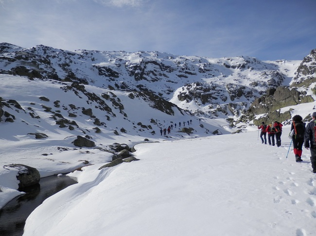
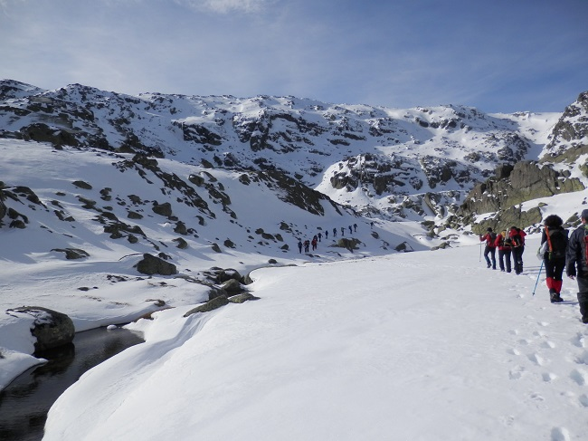

Ruta por Navalperal-Bohoyos
Salimos desde Navarredonda de Gredos en dirección a El Barco de Ávila. Poco antes de llegar nos metimos, a la izquierda, en dirección a Navamediana y Bo El sábado 28 de febrero, Día de Andalucía, salimos desde Navarredonda de Gredos en dirección a El Barco de Ávila. Poco antes de llegar nos metimos, a la izquierda, en dirección a Navamediana y Bohoyo. Entre estos dos pueblos hay una pista (está señalizado) que te lleva en poco más de 500 m hasta un aparcamiento donde empieza la ruta de la Garganta de Bohoyo. Esta era la antigua puerta al corazón de la Sierra de Gredos hasta que se construyó la carretera de La Plataforma en Hoyos del Espino. Hoy son pocos los que vienen por aquí, la mayoría se va a la masificada Plataforma de Hoyos del Espino, y no saben lo que se pierden.
Sobre las diez y media llegamos al aparcamiento y nos ponemos las botas, Hoy el día está más nublado y cubierto que el anterior, esperemos que la lluvia no haga acto de presencia. Atravesamos un paso canadiense y empezamos a caminar por un bosque de robles. Las balizas no faltan. Vamos por una pista que sube plácidamente, las vistas son estupendas con los montes nevados al fondo. Después de un rato pasamos junto a un bello prado donde hay un cartel indicando a la Fuente de la Navazuela, lo dejamos para la vuelta. Conforme subimos ya pisamos algunos manchones de nieve muy blanda. La pista hace un par de revueltas donde gana altura y se convierte en un sendero.